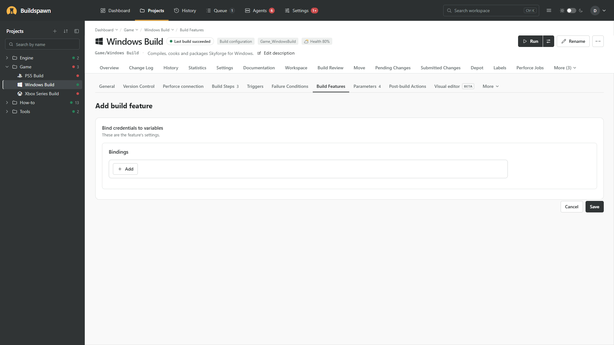

Bind credentials to variables
Makes stored secrets available to your build steps as variables. The values are hidden in the log.
When to use it
Use it when a step needs a password, a token or a key file, for example the Steam account password or a signing certificate. You keep the secret in Credentials once. The build configuration only says "put this credential in that variable". Nobody types a secret into a script.

How to set it up
- Open the build configuration, click Settings, then Build Features. Click Add build feature and choose Bind credentials to variables.
- Under Bindings click Add and pick the kind of binding (see the table below).
- Type the Variable name your step will read, for example
STEAM_PASSWORD. - Choose the credential from the list.
- Add more bindings if you need them. Click Save.
Every field
Every binding has a Variable name and a Credentials choice. The kinds you can add are:
| Field | What it does | Default | Example |
|---|---|---|---|
| Secret text | One secret in one variable. | - | Variable API_TOKEN |
| Secret file | The secret is a file. The variable holds the path of a temporary copy, which is deleted after the build. | - | Variable SIGN_KEY_FILE |
| Username and password (two variables) | The user name goes in one variable and the password in another. | - | P4_USER and P4_PASS |
| Username and password (one variable) | The variable holds user:password. | - | FTP_LOGIN |
| SSH user private key | A key file path variable, plus optional user name and passphrase variables. | - | SSH_KEY |
| Certificate | A keystore file path, and optional password and alias variables. | - | CERT_FILE |
| Zip file | A zip is unpacked into a temporary folder. The variable holds the folder. | - | SDK_DIR |
A worked example
A PowerShell step uploads the build to a store. The credential store-upload-token is a Secret text. The studio adds a binding with Variable STORE_TOKEN. The script reads $env:STORE_TOKEN. See also Use a secret.
What you see when it runs
The step can read the variable. If the value ever appears in the log, it is replaced with ****. Secret files are removed when the build ends.
Upload started with token ****
Problems and fixes
| Problem | What to do |
|---|---|
| The variable is empty in my step | Check the name. Variables are case sensitive on Linux and macOS. On Windows read it as %STORE_TOKEN% or $env:STORE_TOKEN. |
| The credential is not in the list | It must be visible to this project. Credentials of a project can only be used inside that project. |
| The value shows in the log | Only the exact value is hidden. If a script changes it, for example encodes it, the changed text is not hidden. |